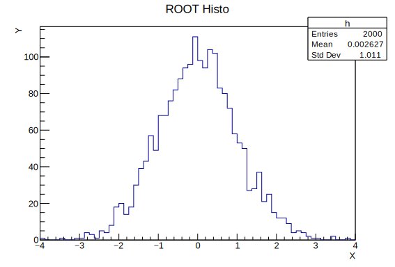

ROOT Notebook with Org Using Emacs org-mode to make ROOT notebooks
2015-12-29 01:00:25(revised 2016-01-14 22:44:46 )Emacs Org mode has long provided a "notebook" functionalty. ROOT's recent announement that it may be used as a Jupyter backend kernel to provide "notebook" functionality is an excuse to show how Org can be used in a similar manner.
1 Introduction
In the recent ROOT v6.06 announcement we got the interesting news that one can now run ROOT from an Jupyter (ne' ipython) notebook. The notebook feature forges a connection between a web browser UI and a backend kernel of which ROOT is one. The notebook can be written to a Markdown document. This document is strikingly similar to, although not as semantically rich as, an Org document. The document you are reading is an attempt to provide a simple, if verbose, ``Org Notebook'' example.
2 Graphics format
Org supports many graphics formats for inline viewing in Emacs or for export. Different export formats ``like'' different graphics formats. To support exporting to both PDF (via LaTeX) and HTML in the most simple way, we have ROOT produce plots in SVG. SVG is native for most HTML renderers but requires a few tweaks for LaTeX. ROOT's SVG also may have some Unicode characters that cause problems with LaTeX. In this example we deal with these issues by adding the following Org headers:
#+LATEX_HEADER: \usepackage[clean,pdf]{svg}
#+LATEX_HEADER: \DeclareUnicodeCharacter{2212}{-}
#+LATEX_HEADER: \setsvg{pretex=\tiny}
The svg package we use here will convert SVG to PDF on the fly.
Take note of the ROOT-specific info in the svg package documentation.
To allow the automatic SVG conversion, pdflatex needs to be told it is
okay to run external programs. You can either export the Org document
to LaTeX (C-c C-e l l) and run pdflatex yourself or you can add
--shell-escape to the org-latex-pdf-process variable. You can set
the variable directly or customize it. Mine looks like this:
("pdflatex --shell-escape -interaction nonstopmode -output-directory %o %f"
"pdflatex --shell-escape -interaction nonstopmode -output-directory %o %f"
"pdflatex --shell-escape -interaction nonstopmode -output-directory %o %f")
3 The Example
Start with some general ROOT plotting setup. This Python source block
exports only the code and has no results. We give it the :session
argument so that the instance of Python is used for all subsequent
code blocks.
import ROOT
# set batch so we don't have a TCanvas pop up
ROOT.gROOT.SetBatch(True);
c = ROOT.TCanvas("c")
Next, we make a histogram, fill it, draw it and print the canvas to
the SVG file. Shown in the Org source for the document you are
currently reading, the :session flag is given and thus the canvas
variable c defined above can be used here. Other directives tell
Org that both code and results are exported and that the result of the
code block is to interpreted as a file name.
h = ROOT.TH1F("h","ROOT Histo;X;Y",64,-4,4)
h.FillRandom("gaus",2000);
h.Draw();
fname = "output_0_1.svg"
c.Print(fname)
fname

If you are reading this document from its Org sources in Emacs you may
wish to toggle inline images with C-c C-x C-v to see the result
above as a figure instead of just the file name.
Next, we do some further operation on the histogram defined above and draw it again to a second file. Note the increase in statistics.
h.FillRandom("gaus")
h.Draw()
fname = "output_0_2.svg"
c.Print(fname)
fname

4 Exporting
You can export this Org file to PDF via LaTeX or to HTML with just a few key strokes. You can further have the result load into a PDF or HTML viewer. Try:
-
C-c C-e l l - export to LaTeX
-
C-c C-e l p - as above plus run
pfdlatexto make a PDF -
C-c C-e l o - as above plus open the PDF file in a viewer
-
C-c C-e h h - export to HTML
-
C-c C-e h o - as above plus open the HTML file in a browser
5 Summary
The addition of ROOT as a backend kernel for Jupyter is a nice development. Through Python source blocks and ROOT's PyROOT binding one has for a while had ``Org Notebooks''. For those that prefer to work inside Emacs and especially with Org markup, this provides a full featured alternative. With some nominal setup, the Org file may be exported to both LaTeX/PDF and HTML using SVG graphics.